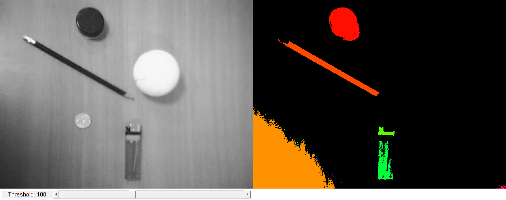

Connected Components
Sources:
function varargout = connected_components_demo_gui(im) % load source image if nargin < 1 im = fullfile(mexopencv.root(),'test','stuff.jpg'); src = cv.imread(im, 'Grayscale',true); elseif ischar(im) src = cv.imread(im, 'Grayscale',true); else src = im; end % Convert image to gray if size(src,3) == 3 src = cv.cvtColor(src, 'RGB2GRAY'); end % create the UI h = buildGUI(src); if nargout > 0, varargout{1} = h; end end function onChange(~,~,h) %ONCHANGE Event handler for UI controls % retrieve current values from UI controls thresh = round(get(h.slid, 'Value')); set(h.txt, 'String',sprintf('Threshold: %3d',thresh)); % Find connected components if true if thresh < 128 bw = (h.src <= thresh); else bw = (h.src > thresh); end else if thresh < 128 bw = cv.threshold(h.src, thresh, 'Type','BinaryInv'); else bw = cv.threshold(h.src, thresh, 'Type','Binary'); end end [labels, nLabels] = cv.connectedComponents(bw); % labels color-coded labels = double(labels) + 1; % cast as float-type with one-based indexing if false dst = label2rgb(labels, 'hsv', 'k'); else clr = hsv(nLabels); clr(1,:) = 0; % background dst = uint8(255 * ind2rgb(labels, clr)); end % show result set(h.img(2), 'CData',dst); drawnow; end function h = buildGUI(img) %BUILDGUI Creates the UI % parameters thresh = 100; max_thresh = 255; sz = size(img); sz(2) = max(sz(2), 200); % minimum figure width % build the user interface (no resizing to keep it simple) h = struct(); h.src = img; h.fig = figure('Name','Connected Components', ... 'NumberTitle','off', 'Menubar','none', 'Resize','off', ... 'Position',[200 200 sz(2)*2 sz(1)+29]); if ~mexopencv.isOctave() %HACK: not implemented in Octave movegui(h.fig, 'center'); end h.ax(1) = axes('Parent',h.fig, ... 'Units','pixels', 'Position',[1 30 sz(2) sz(1)]); h.ax(2) = axes('Parent',h.fig, ... 'Units','pixels', 'Position',[sz(2)+1 30 sz(2) sz(1)]); if ~mexopencv.isOctave() h.img(1) = imshow(img, 'Parent',h.ax(1)); h.img(2) = imshow(img, 'Parent',h.ax(2)); else %HACK: https://savannah.gnu.org/bugs/index.php?45473 axes(h.ax(1)); h.img(1) = imshow(img); axes(h.ax(2)); h.img(2) = imshow(img); end h.txt = uicontrol('Parent',h.fig, 'Style','text', 'FontSize',11, ... 'Position',[5 5 130 20], 'String',sprintf('Threshold: %3d',thresh)); h.slid = uicontrol('Parent',h.fig, 'Style','slider', 'Value',thresh, ... 'Min',0, 'Max',max_thresh, 'SliderStep',[1 10]./(max_thresh-0), ... 'Position',[135 5 sz(2)-135-5 20]); % hook event handlers, and trigger default start set(h.slid, 'Callback',{@onChange,h}, ... 'Interruptible','off', 'BusyAction','cancel'); onChange([],[],h); end